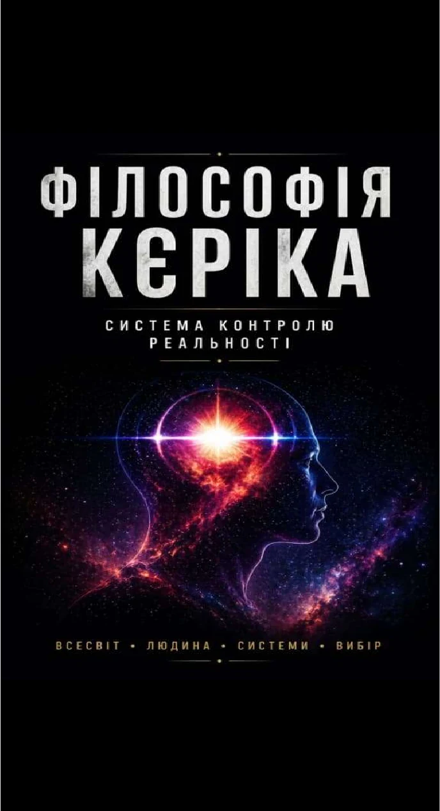

THEME 01
PHILOSOPHY OF KERIK
Philosophy of Kerik
A system of thought about individuality, choice, freedom, technology, wealth and control of one's own reality.
01
The Book

CENTRAL WORK
From the Universe to individual choice
The book moves from the Universe and evolution to money, power, technology, collective systems and the concrete decisions of an individual. Its central theme is the mechanics of systems and the ability to see them while preserving one's own direction.
- Full Ukrainian edition — prepared
- Ukrainian Short Edition — prepared
- English Short Edition — prepared
The full text of the book is not published on the website without a separate decision by the author.
02
Articles
Independent texts will develop the central themes of the book and the wider philosophical project.
THEME 02
Money, resources and freedom
Archive in developmentTHEME 03
Technology, attention and autonomy
Archive in development03
Concepts
Core ideas through which the structure of Philosophy of Kerik is built.
01Control of reality
02Individuality
03Conscious decision
04Systems and autonomy
04